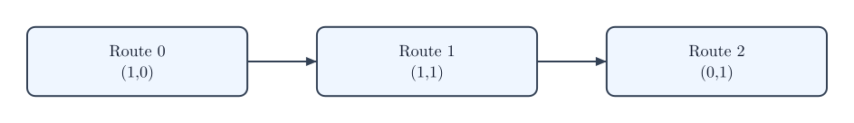
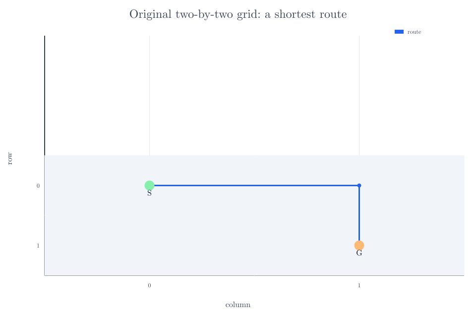
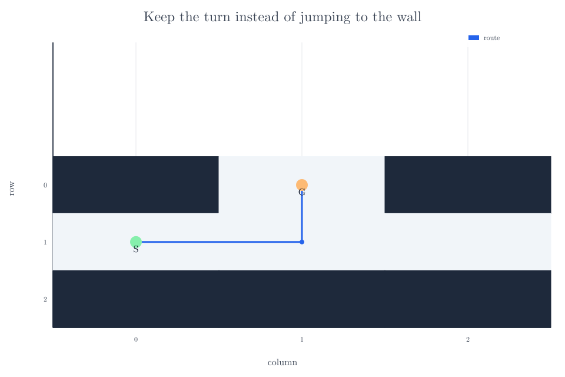
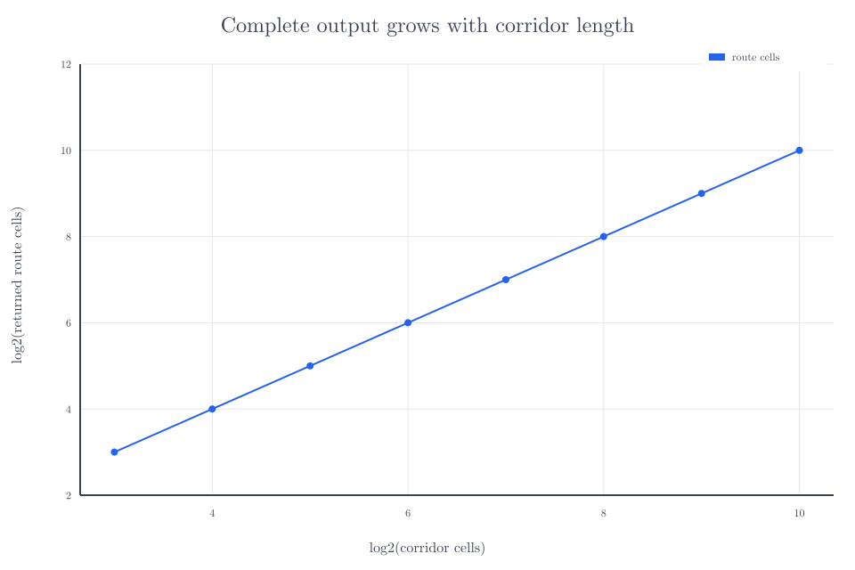

Jumping along corridors without skipping a turn
Abstract
A jump can save queue work along a corridor, but jumping past a junction can lose the only route. This report preserves the original orthogonal-grid API and two-by-two example, explains a completeness correction, and derives the safe corridor contraction used by its native implementation. Returned paths include every unit step. This corridor-jump variant does not implement the symmetry pruning of published Jump Point Search, and no open-room acceleration claim is made.
A three-cell decision matters
Place a vertical exit above the middle of a horizontal passage. Starting at its left end, a ray that jumps directly to the right wall skips the only upward turn. The corrected native search retains any cell where a perpendicular move is possible. The diagram depicts the actual returned route coordinates; it is a route summary, not a recorded queue history.
#include <dm/dm.hpp>
int main() {
std::filesystem::create_directories("build");
const std::vector<std::vector<bool>> g = {{true, false, true},
{false, false, false},
{true, true, true}};
const auto r = dm::algorithms::jump_point_search(g, {1, 0}, {0, 1});
if (!r.found || r.cost != 2)
throw std::runtime_error("junction route");
std::print("| route index | row | column |\n| ---: | ---: | ---: |\n");
for (std::size_t i = 0; i < r.path.size(); ++i)
std::print("| {} | {} | {} |\n", i, r.path[i].first, r.path[i].second);
dm::graphics::Diagram d;
for (std::size_t i = 0; i < r.path.size(); ++i) {
const auto[row, col] = r.path[i];
d.node(std::to_string(i), {5. * i, 0},
std::format("Route {}\n({},{})", i, row, col));
if (i)
d.edge(std::to_string(i - 1), std::to_string(i));
}
d.save_svg("build/jump_point_junction.svg");
}| route index | row | column |
|---|---|---|
| 0 | 1 | 0 |
| 1 | 1 | 1 |
| 2 | 0 | 1 |

Contract only a straight corridor
A nonterminal degree-two cell whose two free neighbors are opposite cannot be a turn on a shortest path. A shortest simple route must pass straight through it. Replacing a sequence of such cells by one edge weighted by its number of unit moves preserves shortest-path cost. Retain junctions, corners, dead ends, the start and the goal. The implementation scans down, up, right and left from each expanded state, stopping at a possible perpendicular turn, the goal, or the last free cell before an obstruction.
For a macro edge from u to v with length L, Manhattan distance satisfies
Thus Manhattan remains consistent on the retained graph. A* orders by g+h, lazily rejects stale entries, and preserves the first parent on equal costs; heap ties use row-major cell identity. Restoring all unit cells from the selected axis-aligned macro edges gives the native inclusive route. The old wall-to-wall shortcut lacked this junction invariant and could return failure on the first example.
Keep the original open two-by-two example
The original report used an obstacle-free two-by-two grid, start (0,0), goal (1,1), and asserted only success through its exit status. Here the program exposes the actual cost and full returned route. Coordinates are (row,column), true means blocked, and the native renderer places rows downward.
#include <dm/dm.hpp>
int main() {
std::filesystem::create_directories("build");
const std::vector<std::vector<bool>> g = {{false, false}, {false, false}};
const auto r = dm::algorithms::jump_point_search(g, {0, 0}, {1, 1});
std::print("| found | cost | inclusive route cells |\n| --- | ---: | ---: |\n| {} | {} | {} |\n",
r.found, r.cost, r.path.size());
for (const auto[row, col] : r.path)
std::print("({}, {})\n", row, col);
if (!r.found || r.cost != 2 || r.path.size() != 3)
throw std::runtime_error("original case");
dm::algorithms::plot_grid_route(g, r, {0, 0}, {1, 1}).title(
"Original two-by-two grid: a shortest route").save_svg(
"build/jump_point_original.svg");
}| found | cost | inclusive route cells |
|---|---|---|
| true | 2 | 3 |
(0, 0) (0, 1) (1, 1)

Boundaries and the repaired junction
Blocked or out-of-bounds terminals return an empty path, zero cost and found=false; cost zero alone is not a reachability test. A free start equal to goal succeeds with one route cell and cost zero. Empty and ragged grids throw. Rows, columns and total cells must fit the checked integer cell-id domain before label allocation. Grid input is borrowed during the call and unchanged; returned routes own their coordinates.
#include <dm/dm.hpp>
int main() {
std::filesystem::create_directories("build");
const std::vector<std::vector<bool>> junction = {{true, false, true},
{false, false, false},
{true, true, true}};
const auto show =
[](const char *name, const dm::algorithms::GridPathResult & r) {
std::print("| {} | {} | {} | {} |\n", name, r.found, r.cost,
r.path.size());
};
std::print("| control | found | cost | route cells |\n| --- | --- | ---: | ---: |\n");
show("required junction",
dm::algorithms::jump_point_search(junction, {1, 0}, {0, 1}));
show("blocked start",
dm::algorithms::jump_point_search(junction, {0, 0}, {0, 1}));
show("outside goal",
dm::algorithms::jump_point_search(junction, {1, 0}, {-1, 1}));
show("same free cell",
dm::algorithms::jump_point_search(junction, {1, 1}, {1, 1}));
show("disconnected",
dm::algorithms::jump_point_search({{false, true, false}}, {0, 0},
{0, 2}));
bool empty = false, ragged = false;
try {
(void) dm::algorithms::jump_point_search({}, {0, 0}, {0, 0});
} catch (const std::invalid_argument &) {
empty = true;
}
try {
(void) dm::algorithms::jump_point_search({{false}, {false, false}},
{0, 0}, {1, 0});
} catch (const std::invalid_argument &) {
ragged = true;
}
if (!empty || !ragged)
throw std::runtime_error("shape validation");
std::print("\nEmpty and ragged grids reject before search.\n");
const auto r = dm::algorithms::jump_point_search(junction, {1, 0}, {0, 1});
dm::algorithms::plot_grid_route(junction, r, {1, 0}, {0, 1}).title(
"Keep the turn instead of jumping to the wall").save_svg(
"build/jump_point_controls.svg");
}| control | found | cost | route cells |
|---|---|---|---|
| required junction | true | 2 | 3 |
| blocked start | false | 0 | 0 |
| outside goal | false | 0 | 0 |
| same free cell | true | 0 | 1 |
| disconnected | false | 0 | 0 |
Empty and ragged grids reject before search.

Returned output still grows with corridor length
Even if a whole straight corridor becomes one macro edge, this API returns every original cell. The following controls measure returned route cost and cell count, not queue expansions or elapsed speed. Output alone requires linear work and storage in path length. In an open room every neighboring cell permits a perpendicular turn, so this conservative variant retains all those opportunities rather than applying JPS symmetry pruning.
#include <dm/dm.hpp>
int main() {
std::filesystem::create_directories("build");
std::vector<double> x, y;
std::print("| corridor cells | actual cost | returned cells |\n| ---: | ---: | ---: |\n");
for (int n = 8; n <= 1024; n *= 2) {
const std::vector<std::vector<bool>> g(1, std::vector<bool>(n, false));
const auto r = dm::algorithms::jump_point_search(g, {0, 0}, {0, n - 1});
if (!r.found || r.cost != n - 1 || r.path.size() != std::size_t(n))
throw std::runtime_error("corridor output");
std::print("| {} | {} | {} |\n", n, r.cost, r.path.size());
x.push_back(std::log2(n));
y.push_back(std::log2(r.path.size()));
}
auto p = dm::graphics::RPlot::create();
p.line(x, y, "route cells", {37, 99, 235}, 2).points(x, y, "",
{37, 99, 235}, 4).title("Complete output grows with corridor length").x_label("log2(corridor cells)").y_label("log2(returned route cells)").y_limits(2, 12).save_svg("build/jump_point_output.svg");
}| corridor cells | actual cost | returned cells |
|---|---|---|
| 8 | 7 | 8 |
| 16 | 15 | 16 |
| 32 | 31 | 32 |
| 64 | 63 | 64 |
| 128 | 127 | 128 |
| 256 | 255 | 256 |
| 512 | 511 | 512 |
| 1024 | 1023 | 1024 |

For N grid cells and maximum scanned ray length L, the implementation has a bound O(NL+N log(N+1)) and O(N) label/heap/output storage. This is a conservative corridor method; claiming the published JPS pruning guarantees for it would be incorrect. It introduces no external dataset because exhaustive finite grids provide stronger controlled correctness checks for this example.
All 512 three-by-three occupancies and every start/goal pair passed the native
BFS comparison. A separate Python BFS verified 1,000 random grid results,
including unit-step route feasibility, blocked endpoints and unreachable
controls. The shared ten-report build passed 131 native tests, 38 directly
instrumented address/undefined-behaviour sanitizer tests, 89 compiled public
examples, documentation coverage for all 388 scoped definitions and ten
representative clangd hovers. All four complete C++ report programs executed
successfully and their native figures were visually reviewed. Batch receipts are
retained under build/mepml-conversion/batch-174-183/.
References
Hart, Nilsson and Raphael (1968), “A Formal Basis for the Heuristic Determination of Minimum Cost Paths”, doi:10.1109/TSSC.1968.300136, supplies the A* background. Harabor and Grastien (2011), Online Graph Pruning for Pathfinding on Grid Maps, describes published Jump Point Search. This report explicitly studies the historical API's four-neighbor corridor variant rather than attributing full JPS symmetry pruning to it.